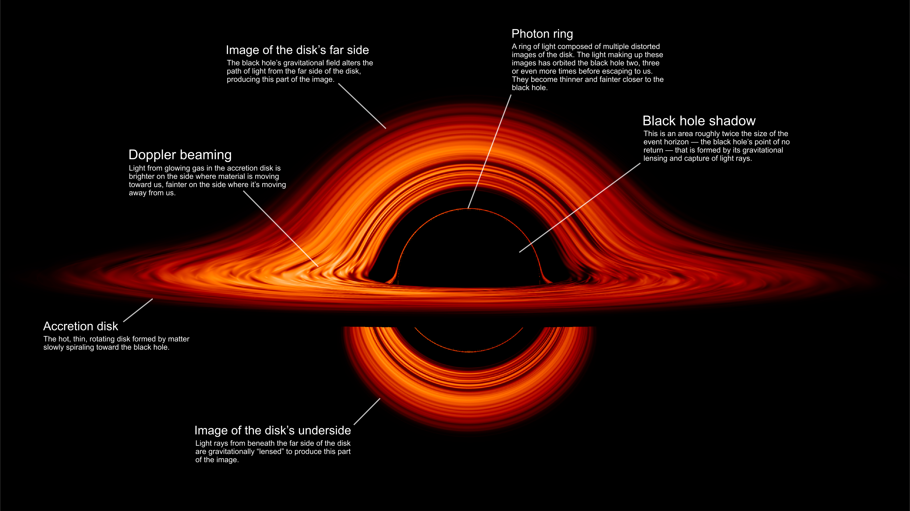
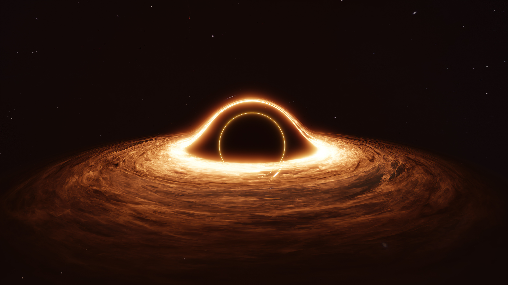

Explaining It's Structure

Disk's far side
- The side of the accretion disk that is opposite to the observer.
- Not directly visible, because the light from it is bent by the gravity of the black hole.
- Can be seen indirectly, as a bright ring of light called the photon ring.
Photon ring
- A bright ring of light that is formed by the light from the far side of the accretion disk that is bent by the gravity of the black hole.
- Not a physical object, but rather a region of space where the light from the far side of the disk is concentrated.
- Typically much brighter than the rest of the accretion disk, and it can be used to measure the mass and spin of the black hole.
Black hole shadow
- The dark region that is formed by the light from the accretion disk that is blocked by the black hole.
- Typically about twice the size of the event horizon, and it is a direct confirmation of the existence of black holes.
Disk's underside
- The side of the accretion disk that is facing away from the observer.
- Not directly visible, but it can be seen indirectly, as a bright ring of light called the photon ring.
- Also thought to be the source of the jets that are emitted by some black holes.
Accretion disk
- A ring of matter that orbits around a black hole.
- The matter in the accretion disk is heated up by the friction of orbiting, and it emits a bright light.
- Can be millions of kilometers in diameter, and it can emit as much light as an entire galaxy.
- The matter in the accretion disk is constantly being pulled into the black hole, but it is also constantly being replenished by new matter from the surrounding space.
Doppler beaming
- A phenomenon that occurs when the light from an object is bent by the gravity of a black hole.
- The light from the object is bent towards the observer, and this causes the object to appear brighter.
- Also thought to be responsible for the bright rings of light that are seen around some black holes.
What Is Inside A Black Hole ?

A black hole is a region in space where gravitational forces are so strong that nothing, not even light, can escape its intense gravitational pull. While the exact nature of what lies inside a black hole is still a topic of scientific investigation and debate, there are several theoretical possibilities:
- Singularity: According to general relativity, the current framework of understanding gravity, a black hole is thought to have a singularity at its core. A singularity is a point of infinite density and zero volume, where the laws of physics, as we currently understand them, break down. It is a region of spacetime where matter and energy are crushed to an infinitely small point. The singularity is hidden behind the event horizon, the boundary beyond which nothing can escape.
- Event Horizon: The event horizon is the boundary around a black hole beyond which nothing can escape, including light. It marks the point of no return. Any object or information that crosses the event horizon is believed to be forever trapped within the black hole. It is a region of spacetime from which gravity is so strong that the escape velocity exceeds the speed of light.
- Spacetime Curvature: Black holes are known to cause extreme spacetime curvature. Inside a black hole, the gravitational forces are so intense that spacetime itself is severely distorted. The curvature of spacetime becomes so extreme that it bends back upon itself, forming a closed loop. This curvature creates a one-way path toward the singularity, preventing anything from escaping.
- Quantum Effects: At the singularity, where the laws of physics break down, quantum effects are expected to play a significant role. Some theories suggest that at the quantum level, the singularity may not be a point of infinite density but rather a region of high energy and intense quantum fluctuations. These fluctuations could give rise to new physics and exotic particles, but the exact nature of these quantum effects is still not fully understood.
- Information Paradox: The concept of information preservation within a black hole is a subject of intense research. According to quantum mechanics, information cannot be destroyed. However, when matter falls into a black hole and reaches the singularity, it is believed to be lost forever. This apparent contradiction is known as the "information paradox," and finding a resolution to this paradox is an ongoing challenge in theoretical physics.
It's important to note that the above explanations are based on our current understanding of physics, particularly general relativity and quantum mechanics. As black holes exist in extreme conditions that stretch the boundaries of our knowledge, further research and breakthroughs are necessary to unravel the mysteries of what lies inside these cosmic enigmas.